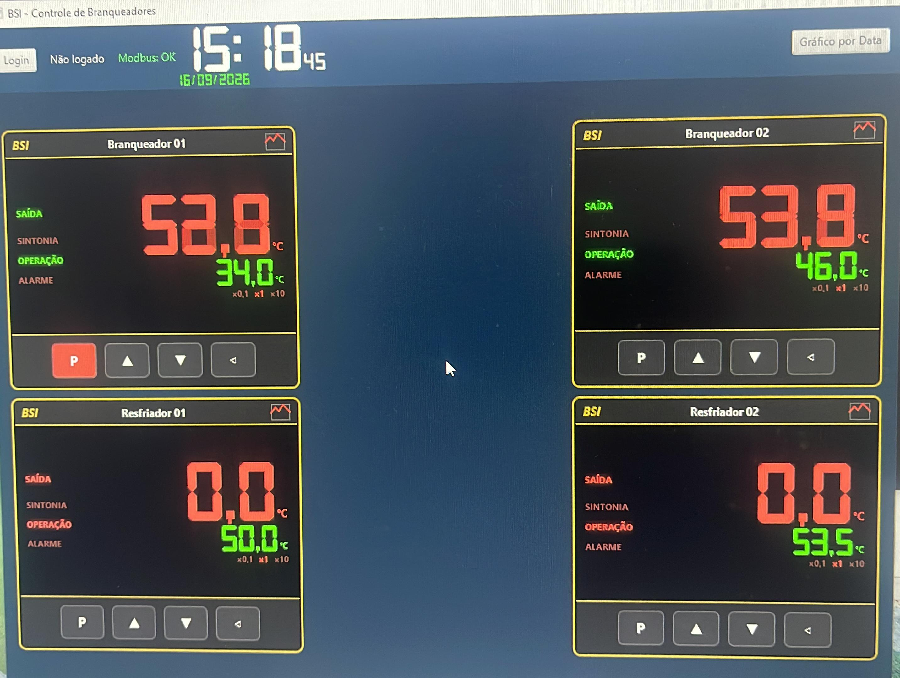

Branqueador
Monitoramento dos branqueadores integrado ao Sistema e ao Processo, com o mesmo padrão de cadastro, leitura de temperatura, alarmes e histórico das autoclaves.
O que já está documentado
No Sistema
- Cadastro de branqueadores junto aos demais equipamentos
- Consulta do histórico de leituras gravadas
No Processo
- Cartão do equipamento com duas temperaturas monitoradas
- Alarmes e bloqueio de fechamento da carga com base na maior das duas temperaturas
- Perda de comunicação sinalizada no cartão
Tela
Painel de controle dos branqueadores e resfriadores, com leitura de saída, sintonia, operação e alarme em tempo real.
